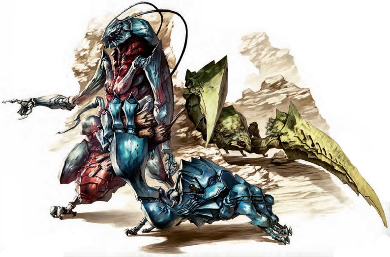

蒂尔巴纳虫族(Tirbana)
在文明的边缘，鬼城与无数蒂尔巴纳虫族喋喋不休的喧嚣相呼应。无休止的劳作，无休止的繁衍，这些可怕的生物通过淹没偏僻村庄的住民传播和繁衍，它们会先让受害者陷入一种魔法睡眠当中，然后再在他们体内产卵。
为了生存，蒂尔巴纳虫族需要鲜活的宿主。因为动物和其他荒野中的生物很少能聚集到足够满足它们需求的数目，所以这些生物逐渐演变为以有心智生物的人丁兴旺的社区为目标。在这些地方，蒂尔巴纳虫族能找到大量的可以充作用来繁殖下一代的宿主的生物。
已知的蒂尔巴纳虫族形态有四种。它们中地位最低的是眼蜓，这是一种类似巨大蜻蜓的奇特生物。地位略高的是昏睡蟑螂，一种负责用魔法力量制服受害者的工蜂型个体。杀手甲虫则是蒂尔巴纳虫族中的战士，负责消灭目标定居点中的一切反抗。群体中的顶层则是产卵虫，它们会将蒂尔巴纳虫族的卵植入注定死亡的宿主体内。

生态
蒂尔巴纳虫族可以从任何可以食用的东西中汲取营养，甚至在有必要时可以靠吃枯木和其他生物的残骸生存。它们没有天敌，因为只有最贪吃的食肉动物才能忍受它们肉的味道。因此，蒂尔巴纳虫族可以随心所欲的生活。
尽管蒂尔巴纳虫族可以在几乎任何环境中生存，但它们不能在没有可以产卵的生物的情况下繁殖。活物的体温提供了卵孵化所必须的温度，并为孵化的幼虫提供食物。一个产卵虫一次至多能产下100个卵，每个卵需要至少15磅新鲜肉才能活到成年。只有人丁兴旺的居民点才能满足蒂尔巴纳虫族繁殖计划的需要。
蒂尔巴纳虫族需要保持宿主存活，因此他们进化出了一些不同寻常的能力，可以让受害者陷入深度睡眠。一旦宿主陷入睡眠状态，产卵虫会在每个受害者的喉咙中植入四个卵。一种酸性凝胶覆盖在卵的表面上，这使它们能够附着在宿主的胃内。一周后，卵会孵出一个苍白色的幼虫（1hp），它会发育为四种蒂尔巴纳虫族形态中的一种。
每个沉睡的生物都是理想的食物，它们为幼虫提供足够完成发育的能量。受害者每天都会受到1d6点体质伤害。当其体质值减为0时，宿主死亡。然后幼虫从尸体中爬出并以尸体为食。
只要宿主的体质还没有到0，就可以通过使用治疗疾病或医疗术来拯救。这会杀死寄生幼虫，接下来宿主可以正常回复体质值。
一旦新一代的蒂尔巴纳虫族孵化出来，宿主的尸体会在两周的时间里为它们的生长提供食物。在此期间，旧一代的蒂尔巴纳虫族开始逐步死亡。眼蜓，昏睡蟑螂和杀戮甲虫开始逐渐虚弱、死亡。最后，当产卵虫死亡时，幼虫也完成了发育过程，新一代的蒂尔巴纳虫族诞生了。幼虫中会有1d3+1个产卵者，虫群会以它们为中心分成小群。然后每个小群开始寻找一群新的宿主以继续这个循环。
环境：蒂尔巴纳虫族顽强，适应性强，会在任何一个有孤立的社区出现的地方定居。因此，这些生物可以在任何陆地或地下环境中找到。它们的巢穴是可怕的地方，充满了在睡梦中慢慢饿死的宿主的尸体，或是正在被已经孵化的幼虫吞噬的尸体。
典型的物理特征：蒂尔巴纳虫族形似巨大的昆虫，融合了螳螂、甲虫、蟑螂、苍蝇和其他虫类的身体结构特征。
一只眼蜓看起来像一只超大的蜻蜓，长1英尺，重2磅，有两个形似巨大绿色球体的眼睛。它通过一双2英尺宽的半透明翅膀飞行。眼蜓非常擅长飞行，它们飞得很快，动作奇异而优雅。
昏睡蟑螂和眼蜓一样有翅膀，但他们缺乏它们较小亲戚拥有的机动性和速度。它们长得像巨大的蟑螂，用六条腿移动，此外还有一条长有一只用来抓握的手的肢体。它们有扁平，发亮的身体和所有蒂尔巴纳虫族都有的三角形头部。昏睡蟑螂大约3英尺长，重30磅。
凶残的杀手甲虫比昏睡蟑螂更大，有大约5英尺长，200磅重。它们的身体几乎没有蜡质外壳包裹，但覆盖在身上的各种残骸则形成了有效的第二层外壳。他们三角形的头上有一双大大的红眼睛。
产卵虫是长相最奇特的蒂尔巴纳虫族。不同于其他同类，它们直立并用后腿行走。虽然他们的第二组肢体已经退化，毫无用处。但上肢却很强壮，并长有功能齐全的手。他们不到6英尺高，体重150磅。
结盟：蒂尔巴纳虫族并非邪恶，但征服和杀死宿主生物的行为是其本性的一部分。尽管这些生物会在幼虫成长的过程中尽力照顾宿主，但他们并没有认识到为了自己的生存而牺牲不情愿的智能生物宿主的生命是不道德的。蒂尔巴纳虫族对他们的群体及其生存有着强烈的献身精神，通常是守序中立阵营。一些蒂尔巴纳虫族则表现出邪恶的倾向，这表现为一些不必要的残忍行为。
蒂尔巴纳虫族的手
蒂尔巴纳产卵虫和昏睡蟑螂有手，这些生物足够聪明，可以使用工具和其他方便的东西。蒂尔巴纳产卵虫和人类一样聪明，所以它可以在战略战术的层面上使用自己拿着的物品。它甚至可以搞懂如何操作复杂的设备。
昏睡蟑螂只比黑猩猩稍微聪明一点，因此它自己可能会使用简单的工具来完成一些简单的任务。例如，用一个桶来收集食物。
因为它们有必要的肢体，所以蒂尔巴纳产卵虫和昏睡蟑螂可以使用武器。一个昏睡蟑螂可以使用小体型生物的单手或轻型武器，但只有经过训练才能熟练使用这些武器。因此在战斗中它们更喜欢使用天生武器，灵巧的手则用来完成其他任务。产卵虫更可能学会使用武器。只有一个进化过（加HD）的产卵者才能获得熟练使用武器所需的专长，而它们不会费心去学习使用一件威力小于自己大颚的武器。
蒂尔巴纳产卵虫有时会教育昏睡蟑螂如何使用物品和机械，这是愚蠢的昏睡蟑螂者永远不可能自己想出来的。产卵虫还会制定计划，并指导它们的下属如何实施这些计划。例如，一个产卵虫可以教昏睡蟑螂如何打开和关闭一组门，以及如何使用这些门来保护蒂尔巴纳巢穴。它也可以向昏睡蟑螂展示如何使用投炸武器，这是不需要选择专长就能学会的。
如果你设计了一个基于蒂尔巴纳虫族的冒险，请考虑冒险的地点和可用的物品。在一些地点，比如在一个小堡垒里，一些东西，拿在蒂尔巴纳虫族手里可能会很危险。允许蒂尔巴纳虫族利用这些物品会让你的遭遇更加令人惊讶和有趣。
蒂尔巴纳的学识
在知识（奥秘）技能上有等级的角色可以通过知识检定了解有关蒂尔巴纳虫族的更多信息。当角色进行了一次成功的技能检定时，可以得到如下所示的结果，包括更低检定能得到的结果。
|
DC |
结果 |
|
11 |
这个生物是一个蒂尔巴纳虫族，这是一种危险的类似昆虫的生物，它们会入侵类人生物的定居点。是一种魔法兽 |
|
16 |
所有的提尔巴纳虫族都有高度发达的眼睛，这让它们非常敏锐，因此不会被夹击。除了擅长战斗之外，蒂尔巴纳虫族还可以用毒和魔法使敌人入睡。 |
|
21 |
在四种类型的蒂尔巴纳虫族中，杀手甲虫是最致命的。然而，所有这些生物更擅长协同作战，利用它们的毒使敌人更容易受到它们的睡眠能力影响。 |
|
26 |
蒂尔巴纳虫族使生物陷入深度睡眠不是为了防御，而是为了繁殖。两足行走的产卵虫是一群蒂尔巴纳虫族中的首领，它会在陷入睡眠的宿主体内产卵，这些卵最终会孵化并导致宿主死亡。 |